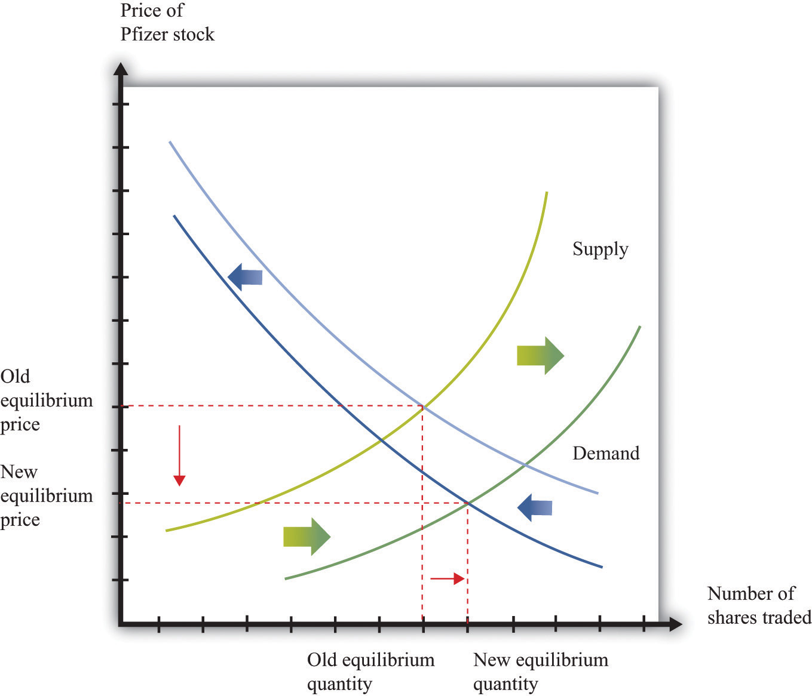
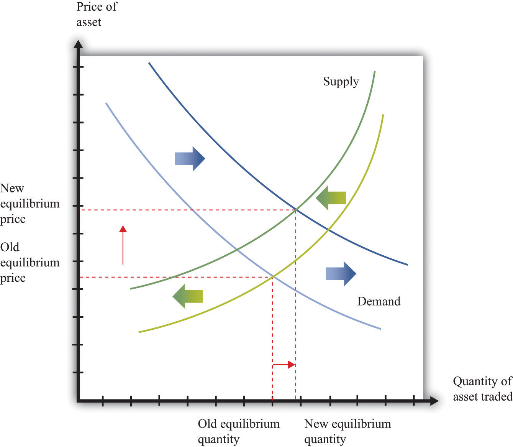

The title of this chapter speaks of making and losing money on Wall Street. We have gone into considerable detail about what determines the price of assets, but we have not yet discussed how easy or hard it is to make money by buying and selling these assets.
Our fictional Wall Street contained places where you could buy many different kinds of assets, such as real estate and automobiles as well as stocks and bonds. But it also contained a building that wasn’t selling assets at all: the casino.
Is buying and selling shares like gambling on a roulette wheel, where gains and losses are purely a matter of luck? To answer this question, think more about the uncertainty associated with buying stocks and bonds. Suppose we are buying a stock that will pay dividends over four years, as in Table 10.3 "Discounted Present Value of Dividends in Dollars", and suppose that the interest rate is 5 percent. From Table 10.3 "Discounted Present Value of Dividends in Dollars", we know that the discounted present value of the stock is $609.61. We then expect this will also be the price of the stock.
Table 10.3 Discounted Present Value of Dividends in Dollars
| Year | Dividend ($) | Discounted Present Value ($, Interest Rate = 5%) |
|---|---|---|
| 1 | 100 | 95.2381 |
| 2 | 90 | 81.63265 |
| 3 | 120 | 103.6605 |
| 4 | 400 | 329.081 |
| Discounted present value (all years) | 609.61 |
Can you make money buying and selling this stock? It seems unlikely. If the price of a stock is equal to the present discounted value of the flow of dividends, then you get what you pay for. If you sell the stock, then instead of an asset that would have paid you the equivalent of $609.61, you receive $609.61 in cash. If you buy the stock, the reverse is true. Either way, you are no richer or poorer after the transaction; you are just holding your wealth in a different form.
Economists often use the metaphor of $100 bills lying on the ground to describe a situation where easy money can be made. Our example of the arbitrage opportunity in the coffee shop, where you could buy beans at $10 a pound and resell them at $12 a pound, is an example: getting rich in that coffee shop is as easy as picking up money on the floor. But if the value of a stock is the discounted present value of the dividends that it will pay, then there is no easy money to be made. There are no $100 bills lying around. You should not anticipate spectacular earnings from owning assets. You can earn a reasonable rate of return, equal to the nominal interest rate, but no more. A market with the characteristic that you cannot expect to earn abnormal profits is called an efficient marketOne in which the price of an asset equals the discounted present value of the flow of benefits.. In such a market, the price of an asset accurately reflects the best forecast of the value of that asset. The value of an asset is the discounted present value of the flow benefits.
Yet this may strike you as odd. There are many people who certainly make it rich by buying and selling stocks, bonds, and other assets. Some of these individuals—like Warren Buffett or George Soros—are household names. Does the fact that some people get very rich on Wall Street mean that markets are not efficient?
There are a couple of possible answers to this question. The first is that even when markets are efficient, some people may get rich. Go back to the stock we were considering earlier but with one small change. Imagine that the numbers in Table 10.3 "Discounted Present Value of Dividends in Dollars" are now expected dividends. They tell you what this stock can be expected to pay out on average, but they are not guaranteed. For example, it might be the case that in year four, the firm will pay a dividend of $800 with 50 percent probability but will also pay $0 with 50 percent probability. The expected dividend is $400. If people care only about the expected value of the dividends (if they are risk-neutral), the price of the stock still equals the (expected) discounted present value.
Now, there are still no $100 bills on the ground. You cannot expect to make unusual profits by buying this stock or others like it. However, some people will get lucky and thus get rich. If you bought this stock, and it ended up paying the high dividend, you would end up with a return nicely above the market interest rate. If it failed to pay the dividend, however, you would get a lower return than the market interest rate. As we looked around the economy, we would see some lucky investors earning high returns and other unlucky investors earning low returns. In this world, buying and selling assets in the stock market is really not that different from betting on a roulette wheel. Buying an asset is like placing your chip on a certain number. If the number comes up, you get rich. If it does not, you lose.
When you go to a casino, you should not expect to win at roulette. But this does not mean that you can never earn spectacular amounts of money. It happens frequently: casinos thrive on advertising these success stories. The same goes for buying an asset, such as a stock. Suppose you buy a share in a pharmaceutical company. The price of the share when you purchase it might indeed equal the expected discounted present value of dividends. Yet the following week the company could have a major discovery that will allow it to be much more profitable in the future. Expected dividends will increase, and so will the stock price. This is certainly good news for you. But it is also no different from getting lucky on the roulette wheel.
Spectacular successes tend to be more visible than losses. In the 1990s, some people earned large amounts (sometimes spectacularly large amounts) from certain successful Internet companies. But many other people lost money on Internet companies that were ultimately unsuccessful, and you are less likely to hear about them.
More than luck is required when investing on Wall Street, however. Just as there are skilled players of blackjack in the casino, there are people who are skilled in assessing the prospects of different firms in an economy.
If the price of a share equals the discounted present value of the dividends that a company will pay, then the total value of all the shares in a company should equal the discounted present value of the total profits the firm will pay out—both now and in the future. The total value of all the outstanding shares in a firm is called its market capitalizationThe total value of all the outstanding shares in a firm..
The price of a share increases whenever a firm’s market capitalization increases, and a firm’s market capitalization should increase whenever there is reason to think that the firm has become more profitable—either now or in the future. If markets are efficient, therefore, we expect share prices to respond to new information about a firm. Traders in large financial firms make their money in part by gathering new information about firms and then acting very quickly on that new information. News about a firm—good or bad—is likely to be incorporated quickly into a firm’s market price, but a trader who can move fast can make money from these movements.
When economists use the metaphor of $100 bills lying on the ground, they are pointing out that if opportunities for easy profits arise, they will disappear very quickly. It is not impossible that someone will drop a $100 bill. But it is highly unlikely that that bill will lie unretrieved for more than a few minutes. If there is easy money to make in the market by buying a stock, professional traders will jump on the opportunity quickly. This has an important implication for the rest of us. If you read in the newspaper today that Merck Pharmaceuticals has just announced a new pharmaceutical compound that is highly effective in treating lung cancer, there is no point in calling your broker and instructing him to buy Merck stock on the basis of this news. Somebody—a very smart trader with her ear to the ground and lots of knowledge about the pharmaceutical industry—might well have made money buying Merck stock at the first hint of this news. But by the time there is an announcement in the paper, the increase in Merck’s expected profits has long been factored into the price.
The theory of efficient financial markets is very powerful because it gives us a key to understanding the prices of assets. Go back to our equation for the value of an asset:
In the case of a share, the flow benefit is the value of the dividend. If the price next year is the discounted present value of further dividends from that point in time onward, then this equation is another way of saying that the value of the share today equals the discounted present value of dividends.
But what if the price that everyone expects an asset to sell for next year is—for some reason—much higher than the discounted present value of the flow benefit from the asset starting next year? As an example, consider a house. You buy a house in part to enjoy living in it—to enjoy “housing services.” You also buy a house as a possible source of capital gains if the price of the house increases. Imagine you live somewhere where everyone seems to think housing prices will increase a lot over the next few years. Then you should be willing to pay more for a house. After all, if you anticipate a large capital gain in five years from selling the house, you can pay more for it now and still expect a good return. So if everyone expects the price of houses to increase in the future, then the current demand for houses increases, so the current price increases. The price increase today reflects the expectation of higher prices in the future.
Now fast forward to next year. We can say the same thing applied to next year: “If everyone expects the price of houses to increase in the future, then the current demand for houses increases, so the current price increases.” This can go on from year to year: housing prices are high because everyone expects higher prices in the future. Higher prices have an element of self-fulfilling prophecy: prices increase because everyone thinks prices will continually increase.
This is sometimes called a housing bubble. In a bubble, the increase in the price of housing does not reflect an increase in the value people place in housing services. In the language of economics, the price is not changing because of any change in the fundamentals. Furthermore, it is possible that prices will not actually keep increasing. If everyone suddenly becomes more pessimistic about the future of housing prices, then the capital gains that everyone anticipated are gone, and housing prices collapse. In this case, the bubble bursts, and prices fall—sometimes very rapidly.
Many economists think that something like this happened in the early stages of the global financial crisis that started in around 2007. The price of housing in many markets had been increasing substantially, and people expected this to continue. At some point, people stopped being so confident that house prices would keep increasing—and, sure enough, the price of houses then decreased rapidly.
The same idea applies to stocks. If everyone believes the value of a particular stock will be higher in the future, then the price will be bid up today. If these beliefs persist, they can sustain a bubble in the stock. If everyone believes that stocks will generally increase in price, then this can lead to a bubble in the entire stock market.
Data on the prices of stocks can perhaps help us see if the efficient market view is accurate, or if we instead see lots of bubbles. This sounds like an easy exercise but is actually very hard. It is difficult to calculate the discounted present value of expected dividends because it requires forecasts of the future. The usual interpretation of this evidence is that the efficient market hypothesis is not capable of explaining all the variations in asset prices, particularly over short periods of time.
An extreme example illustrates this point well. Here is a quotation from an article that appeared in the Wall Street Journal after the collapse in the US stock market in 1987: “Calmly appraised, the intrinsic value of American industry didn’t fall 23 percent in a day.”Roger Lowenstein, “After the Fall: Some Lessons Are Not So Obvious,” Wall Street Journal, August 25, 1997. “The intrinsic value of American industry” refers to the total market capitalization of all the firms quoted on the stock exchange. It is hard to explain such short-run variations in asset prices from the perspective of discounted present value of dividends.
Economist Robert Shiller claims that stock markets can exhibit “irrational exuberance.” He argues that asset prices move around too much to be explained by theories that rely on the discounted present value of dividends to the price of assets. Instead, the fluctuation of prices, at least over short periods of time, might also be influenced by expectations and bubbles. More generally, Shiller is one of many financial economists who believe that economic theory needs to be supplemented with some ideas from social psychology to do a better job of explaining the performance of financial assets. Such behavioral financeThe incorporation of some ideas from psychology into the theory of financial markets. has identified several anomalies—that is, occasions on which asset prices apparently diverge from the values predicted by efficient market theory.
Despite the insights of behavioral finance, most economists take the view that, at the very least, efficient market theory is the best starting point for thinking about asset prices. Efficient market theory provides us with two key insights: (1) the price of a stock should reflect expectations about future profits, which means that (2) the price of a stock should change when—and only when—there is new information that changes those expectations. Many economists nonetheless think this approach is incomplete and that behavioral finance can also help us understand financial markets. A word of caution: even if markets are not always efficient, this still does not mean that there are easy ways to make money on Wall Street.
Each weekday in the United States, around 5 p.m. Eastern Standard Time, there are reports on the performance of the markets that day. At other times of the day, you can learn about other markets around the world. Newscasters report on the volume of trade (the number of shares exchanged) and some index of the price of stocks, such as the DJIA. In economic terms, these are reports about the price and quantity in a market. Therefore we can use the supply-and-demand framework, and more specifically the tool of comparative statics, to consider what makes asset prices increase and decrease.
Toolkit: Section 31.16 "Comparative Statics"
You can review how to carry out a comparative statics exercise in the toolkit.
If we take the efficient-market view that the price of an asset equals its discounted present value, then any change in the price of an asset must be due to some change in its expected discounted present value. If, for example, the price of General Motors stock increases, this should reflect some information about the prospects and hence future dividends of this company. Moreover, any information that makes the price increase or decrease must be new. If it were old information that everyone in the market already knew, then it would have already been factored into the stock price. Hundred-dollar bills do not stay on the ground for long. So what are some of the big events that can change asset prices?
Part of the profitability of a firm comes from its innovative activities in developing and marketing new products. Open a computer magazine, for example, and you will see hundreds of advertisements for a wide range of new products. How does news about a new product affect the price of a firm’s stock?
Consider the following story:
Pfizer stock tumbled Monday after the world’s biggest drugmaker abruptly pulled the plug on its most important experimental medicine—a drug meant to treat heart disease that instead caused an increase in deaths and heart problems in people taking it in a clinical trial.
Shares of Pfizer sank about 11 percent in afternoon trading as investors worried what the New York-based company would do to replace the product, torcetrapib, in its pipeline.
Pfizer CEO Jeffrey Kindler unveiled his company’s pipeline at an analyst meeting last week, before the bad news on torcetrapib.
Trading was heavy with more than 235 million shares changing hands by mid-afternoon—nearly seven times the stock’s average daily volume.
On Saturday, Pfizer and the Food and Drug Administration announced that the drug company would halt a clinical trial of torcetrapib due to an increased rate of death and heart problems in patients who took it.
Just two days earlier, Pfizer’s new CEO Jeffrey Kindler had told hundreds of investors and analysts at a research meeting that the drugmaker could seek approval for the medicine as early as next year if clinical data supported it.Aaron Smith, “Heart Drug Pulled, Pfizer Tumbles,” CNNMoney.com, December 4, 2006, accessed January 29, 2011, http://money.cnn.com/2006/12/04/news/companies/pfizer_stock/index.htm.
Pfizer’s announcement is the exogenous variable in this comparative statics exercise. The story tells us that the announcement led to a decrease in price and a large amount of trading. Let us try to make sense of this. First the announcement clearly contained new information that the markets had not anticipated. Indeed, the article tells us that, a few days previously, there had been positive information about this product.
Because market participants did not previously know the results of the clinical trials, and because the announcement is bad news, analysts and market professionals immediately revise downward their estimates of the future profitability of Pfizer. They now expect that dividends in future years will be lower than they had previously thought. This reduction in the discounted present value of dividends causes the stock price to decrease.
The way this works in the supply-and-demand framework is shown in Figure 10.8 "Bad News about a Firm’s Product Reduces the Value of Its Stock.". The bad news influences both the demand and supply curves. Prospective buyers of the stock are not willing to pay as much for it, given the bad news. So at a given stock price, the quantity demanded decreases. In Figure 10.8 "Bad News about a Firm’s Product Reduces the Value of Its Stock.", the demand curve shifts to the left. Owners of the stock are now less interested in holding their shares. So at a given price, the quantity supplied increases. This means that the supply curve shifts to the right.
Figure 10.8 Bad News about a Firm’s Product Reduces the Value of Its Stock.
Bad news about a clinical trial causes many current holders of Pfizer stock to want to sell their shares and makes people less likely to want to buy Pfizer stock.
The bad news has an unambiguous effect on the price of the stock: it decreases. The effect of the announcement on the quantity traded is not clear. It depends on the steepness of the curves and the relative shifts in supply and demand. In this particular example, we know that there was an unusually large amount of trading, so the equilibrium quantity increased.
Had the results of the clinical trials already been leaked to the market, there would have been no new information from the announcement. The test results would already have been incorporated in the asset price. The supply and demand curves would not have moved at all.
In most modern economies, interest rates are set (or more precisely heavily influenced) by a central bank through its conduct of monetary policy. This process and its effects on an economy are studied in detail in macroeconomics courses. Here, we look at the effect of monetary policy on asset prices.
Because monetary policy influences interest rates, the link to asset prices is immediate. We know that the price of an asset equals its discounted present value, and that interest rates are used for the discounting process. A change in interest rates therefore directly affects asset prices. Using the example in Table 10.3 "Discounted Present Value of Dividends in Dollars", if a monetary authority were to increase the interest rate from 5 percent to 10 percent, then the asset price would decrease by about $81.
Figure 10.9 Equilibrium Asset Prices Respond to a Decrease in Interest Rates
A reduction in interest rates shifts the demand curve for assets (stocks, bonds, and other assets) to the right and shifts the supply curve to the left.
Figure 10.9 "Equilibrium Asset Prices Respond to a Decrease in Interest Rates" shows the impact of monetary policy on the supply-and-demand framework. As the interest rate decreases, the discounted present value of an asset increases. So at a given price, the demand for an asset increases. This is shown as an outward shift in demand. Also, at a given price, the supply of the asset decreases. As the interest rate decreases, more holders of the asset want to hold onto it, so the quantity supplied to the market is lower at each price. A rightward shift of the demand curve, combined with a leftward shift in the supply curve, tell us that the price of an asset increases when the interest rate decreases. The effect of the interest rate change on the quantity traded is ambiguous: it depends on the relative slopes of the curves and how much the curves shift.
On the walk down Wall Street, we noticed that there were many markets, all trading simultaneously. Yet we have looked at the market for each particular asset in isolation. This is a fine tactic for understanding how to do comparative statics. But the real world is more complex: a single event can impact multiple markets.
Take, for example, the bad news on the test results for Pfizer. We saw that this news forced the firm’s stock price to decrease. But Pfizer may have also borrowed in years past by issuing bonds. What will happen to them when the bad news hits the bond market? The price of a bond is the discounted present value of the interest payments on a bond over its lifetime, taking into account the possibility of bankruptcy. So the bad news from the pharmaceutical company ought to depress the price of its bonds. This happens largely because the chance of bankruptcy—while surely small—increases with the bad news.
We observed earlier that the global financial crisis had its origins, at least in part, in the real estate market. The effects quickly spread beyond the housing market. Many people had borrowed to buy houses, and these loans—known as mortgages—were financial assets held by banks. When housing prices decreased, the value of these mortgages decreased as well. Moreover, these mortgages were often combined in various ways to make new assets. When housing prices decreased, the price of these related assets decreased as well. And because financial institutions sometimes had difficulty working out the value of their assets, there was a risk that they would go bankrupt. This in turn meant that anyone who had lent to such an institution now had an asset that was less valuable. Thus a collapse in the price of one asset—houses—led to a decrease in the price of all sorts of other assets in the economy as well.